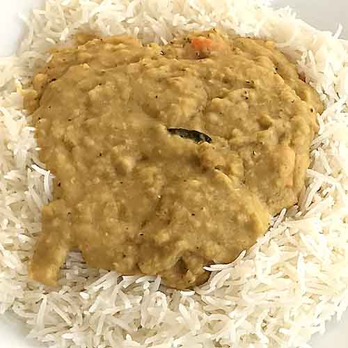

Carrot and coconut dal

Of all the dals I've been making recently, this is by far the easiest, and also one of the most delicious.
Ingredients
Serves 4 (or 2, if those people are me!)
Difficulty: Easy
- 250g yellow lentils
- 1 carrot
- 2 tablespoons sunflower oil/rapeseed oil
- 1 tin of coconut milk
- 500ml (approx) vegetable stock
- 1 bay leaf
- Powdered spices as desired (eg coriander, cumin, garam masala, tumeric, ginger etc)
- Ground black pepper
Method
- Chop the carrot into dice
- Heat the oil and sauté the carrot for a few minutes
- Add the lentils
- Add the coconut milk and vegetable stock, ensuring the vegetables are covered. (Add more stock/water if not.)
- Add the bay leaf, ground pepper and curry powder(s), cover and simmer for 20 minutes or so.
- Serve with basmati rice and/or Indian breads such as roti, naan etc.
Home